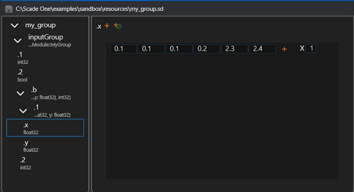

Simulation data#
Simulation data files are used to represent sequences of values:
they are the outputs of simulation jobs;
they can be used in test harnesses:
in data source blocks, to feed the input flows of the operator instance to test
in oracle blocks, to store expected output values to compare with the actual values in model test execution
This library allows to read and edit simulation data files. Look for simulation data in the Scade One documentation.
Covered features#
Support of
nonevalues, meaning that the value is not defined at a given cycle:Stimuli operator: a value must be defined at first cycle, for next steps the
nonetype means that a previous value is held.Simulator trace: a
nonevalue means that the variable clock is false.
Support of all Swan types, external types (stored as a byte array) and combinations of them (native support of Variants & Groups).
Data support: structure, table (when the table size is a static constant), enum, string.
Limitations: partial data is not supported. All values of a complex type must be given.
The variables are organized as a tree of <scope>/<scope>/…/<variable>, each scope and variable has an optional Swan kind: sensors, inputs, outputs, probes, assume, guarantee and so on.
Possibility to specify a repetition of a signal or part of it.
Possibility to open an existing file for modification: elements, types and values.
Design principles#
The values are stored as their binary representation in memory: no structured representation of composite values.
The values sequences are compressed using the zlib data-compression library.
The file size has no limit (more than 4 GB): use of 64-bits positions and C APIs for seek in file.
The entire file content is not loaded in memory when opening: the data is read in file only on demand.
The file content is not entirely rewritten on disk when closing: incremental read and write operations.
Performance#
Appending values to an element: no need to read all the values before appending and use of a write cache.
Updating element: no move of significant data in file.
Examples#
This section gives some examples of using the API to create and edit simulation data files. It describes how to create elements for composite types (struct, variant, group) and fill them with values. It also shows how to preview the content of a .sd file as text.
For type definitions, see Type definitions section. See Element.append_value()
for the correspondence between Python values and simulation data types.
Simulation data file preview command line#
The pyscadeone Command line interface is used, in combination with the simdata and -show arguments, to preview the content of a data file with .SD extension in a text editor, without opening the Scade One tool or the Signal Editor.
# View content of a .SD file as a text
pyscadeone simdata --show some_file.sd > some_file.txt
notepad some_file.txt # opens the file in notepad, or vi editor and so on
Create a structure type data#
import ansys.scadeone.core.svc.simdata as sd
f = sd.create_file("mySimDataFile.sd") # creates a new simulation data file
t_struct1 = sd.create_struct_type([("f1", sd.Bool), ("f2", sd.Int32)], "p1::tStruct1") # creates a new structure type
e_struct1 = f.add_element("eStruct1", t_struct1) # adds an element to the file
clock1 = False
for i in range(10): # number of cycles
clock1 = not clock1
e_struct1.append_value([clock1, i + 14]) # adds values to the element
f.close() # closes the file
Create a variant type data#
import ansys.scadeone.core.svc.simdata as sd
f = sd.create_file("mySimDataFile.sd") # creates a new simulation data file
variant_type2 = sd.create_variant_type([("speedLimitStart", sd.Int32), ("speedLimitEnd", None)], "MyModule::SpeedLimit") # creates a new variant type
variant_type1 = sd.create_variant_type([("tsBool", sd.Bool), ("tsNone", None), ("tsSome", variant_type2)], "MyModule::Variant") # creates a new variant type with an inserted variant subtype
variant_element = f.add_element("inputVariant", variant_type1) # adds an element to the file
variant_element.append_values_sequence([("tsNone")]) # fills with values
variant_element.append_values_sequence([("tsBool", True)])
variant_element.append_values_sequence([("tsSome", ("speedLimitStart", 147))])
variant_element.append_values_sequence([("tsSome", ("speedLimitEnd"))])
variant_element.append_values_sequence([("tsNone")])
f.close() # closes the file
Create a group type data#
A group is a composite type that contains child elements. Each child element can be of any type, including another group.
The Simdata representation of a group is a container used to organize related elements together. The Element
representing the group has the name of the group itself, but does not hold values; its child elements do.
The group representation is flattened: child elements are represented as individual elements in the simulation data file. Child elements are identified by their path in the group hierarchy, using positions, and names.
Suppose one defines a group type in Swan as follows: group MyGroup = (int32, bool, b:((x:float32, y:float32), int32)) in the module interface MyModule. The code to create a simulation data file with this group type is:
import ansys.scadeone.core.svc.simdata as sd
f = sd.create_file("mySimDataFile.sd") # creates a new simulation data file
group_element = f.add_element("inputGroup", group_expr="MyModule::MyGroup")
child_1 = group_element.add_child_element(".(.1)", sd.Int32, sd.ElementKind.GROUP_ITEM)
child_2 = group_element.add_child_element(".(.2)", sd.Bool, sd.ElementKind.GROUP_ITEM)
child_b1_b_1_x = group_element.add_child_element(
".(.b.1.x)", sd.Float32, sd.ElementKind.GROUP_ITEM
)
child_b1_b_1_y = group_element.add_child_element(
".(.b.1.y)", sd.Float32, sd.ElementKind.GROUP_ITEM
)
child_b1_b_2 = group_element.add_child_element(
".(.b.2)", sd.Int32, sd.ElementKind.GROUP_ITEM
)
child_1.append_values_sequence([1, 1, 1, 2, 3, 4])
child_b1_b_1_x.append_values_sequence([0.1, 0.1, 0.1, 0.2, 2.3, 2.4])
child_b1_b_1_y.append_values_sequence([2.5, 2.5, 2.5, 2.6, 2.7, 2.8])
child_b1_b_2.append_values_sequence([10, 11, 12, 12, 12, 12])
child_2.append_values_sequence([False, True, False, True, False, True])
f.close()
The content of the file can be visualized:
$ pyscadeone simdata --show mySimDataFile.sd
*** Elements:
inputGroup:
GROUP_ITEM .(.1): int32: 1 | 1 | 1 | 2 | 3 | 4 |
GROUP_ITEM .(.2): bool: false | true | false | true | false | true |
GROUP_ITEM .(.b.1.x): float32: 0.1 | 0.1 | 0.1 | 0.2 | 2.3 | 2.4 |
GROUP_ITEM .(.b.1.y): float32: 2.5 | 2.5 | 2.5 | 2.6 | 2.7 | 2.8 |
GROUP_ITEM .(.b.2): int32: 10 | 11 | 12 | 12 | 12 | 12 |
In the Scade One Signal Editor, the group is represented as:
{kind=link}

High-level API#
High-level functions#
The following functions are used to create or open a simulation data file, and to create user types definitions for elements, which can be then be filled with values from Python values.
File creation and edition functions#
open_file(), create_file() and edit_file() functions return a File object,
which can be used as a context manager.
Example of using the context manager support for a file:
import ansys.scadeone.core.svc.simdata as sd
# instead of:
# my_file = sd.create_file("mySimDataFile.sd")
# try:
with sd.create_file("mySimDataFile.sd") as my_file:
my_element = my_file.add_element("myElement", sd.Float32)
my_element.append_values_sequence([0.1, 0.2, 0.3])
- ansys.scadeone.core.svc.simdata.open_file(file_path: str) FileBase#
Open a simdata file in read-only mode
- Parameters:
- file_path
str path of the file
- file_path
- Returns:
FileBaseThe opened file
- Raises:
ScadeOneExceptionfile could not be opened
Type creation functions#
- ansys.scadeone.core.svc.simdata.create_array_type(base_type: Type, dims: List[int], name: str = '') ArrayType#
Create a multi dimensional array type
- ansys.scadeone.core.svc.simdata.create_struct_type(fields: List[Tuple], name: str = '') StructType#
Create a structure type
- Parameters:
- fields
List[Tuple] all fields of the structure
- name
str,optional structure name
- fields
- Returns:
StructTypeThe created structure type
- Raises:
ScadeOneExceptionstructure type could not be created, arguments are invalid, or field names duplicate
- ansys.scadeone.core.svc.simdata.create_enum_type(values: List[str], name: str = '') EnumType#
Create an enumeration type
- ansys.scadeone.core.svc.simdata.create_variant_type(constructors: List[Tuple], name: str = '') VariantType#
Create a variant type
- Parameters:
- constructors
List[Tuple] constructors of the variant type
- name
str,optional name of variant type
- constructors
- Returns:
VariantTypeCreated variant type
- Raises:
ScadeOneExceptionvariant type could not be created, invalid arguments or duplicate constructor names
- ansys.scadeone.core.svc.simdata.create_external_type(mem_size: int, name: str = '') ExternalType#
Create an external type
High-level classes#
Following classes are used to manipulate simulation data files and their content:
Fileis returned byopen_file(),create_file()andedit_file().Elementis created byFile.add_element()orElement.add_child_element().
File class#
Element class#
- class ansys.scadeone.core.svc.simdata.Element(file: FileBase, elem_id: int, name: str, sd_type: Type | None, kind: SdeKind, group_expr: str | None, parent: ElementBase | None)#
Bases:
ElementBaseClass for simdata elements
- add_child_element(name: str, sd_type: Type | None = None, kind: SdeKind = SdeKind.NONE, group_expr: str | None = '') ElementBase#
Add a child to element
- append_nones_sequence(count: int) None#
Create and append a sequence of ‘none’
- Parameters:
- count
int number of Nones to add
- count
- Raises:
ScadeOneExceptioninvalid count, cannot create or append nones sequence
- append_value(py_value: Any) None#
Add a value to an element or appends to the last sequence of values if any.
Correspondence between Python types and SimData types is as follows:
Noneis converted to a SimData none value.defs.PredefinedTypevalues are converted to their corresponding SimData predefined value.defs.StructTypevalues are given as a list or tuple of their fields values in the same order as the fields in the struct type definition, and are converted to SimData list value.defs.ArrayTypevalues:if the value has a shape attribute (e.g.
numpy.array()function), it is converted to SimData list value if its shape corresponds to the array type dimensions, and its items are converted according to the array base type.else, the value is expected to be a list or tuple and is converted to SimData list value if its length corresponds to the array type first dimension, and its items are converted according to the array base type.
defs.EnumTypevalues are given as the enum tag name (string) and are converted to SimData enum value.defs.VariantTypevalues are given as a tuple with the first item being the constructor name (string) and the second item being the constructor value (if any), and are converted to SimData variant value.defs.ExternalTypevalues are given as bytes and are converted to SimData external value.
- Parameters:
- py_value
Any value that has a type corresponding to the element
- py_value
- Raises:
ScadeOneExceptionvalue is invalid or could not be added
- append_values_sequence(py_values: List[Any], repeat_factor: int = 1) None#
Create and append a new sequence of ‘values’ with repeat factor.
See
append_value()for the correspondence between Python types and SimData types.Do not use repeat factor for array and structure types. Do not use this for structure or array types that already have any value, use append_value() instead in such case.
- Parameters:
- py_values
List[Any] list of value(s) to add
- repeat_factor
int,optional number of times to add, by default 1 (no repeat), do not use with non scalar values
- py_values
- Raises:
ScadeOneExceptionInvalid repeat, none contained in values, invalid values, cannot create or append values sequence, used repeat factor for array or structure types
- clear_values() None#
Clear all values of element
- Raises:
ScadeOneExceptionvalues could not be cleared
Type definitions#
Simulation values have types, defined in Swan language. Types can be predefined (native) or user-defined. In the latter case, the type must be created before creating an element of this type.
Values are passed to the API as Python values, and converted to the proper binary representation of the Swan type.
Scalar types are mapped to Python built-in types, composite types are mapped to Python lists or tuples.
For arrays one can use numpy.array() function.
Predefined types#
Predefined swan types that shall be used for creation of simple elements or user types definitions
Swan type |
SD Type |
|---|---|
char |
Char |
bool |
Bool |
int8 |
Int8 |
int16 |
Int16 |
int32 |
Int32 |
int64 |
Int64 |
uint8 |
UInt8 |
uint16 |
UInt16 |
uint32 |
UInt32 |
uint64 |
UInt64 |
float32 |
Float32 |
float64 |
Float64 |
Example of using a predefined type (float 32 here) for new element and a custom user type:
import ansys.scadeone.core.svc.simdata as sd
my_file = sd.create_file("mySimDataFile.sd")
# Predefined type
my_element1 = my_file.add_element("myElement", sd.Float32)
# User defined type: 2D array of float32
my_array_type = sd.create_array_type(sd.Float32, [3, 4], "my2DArrayType")
my_element2 = my_file.add_element("my2DArrayElement", my_array_type)
Type-related classes#
- class ansys.scadeone.core.svc.simdata.defs.ArrayType(type_id: int, base_type: Type, dims: List[int], name: str = '')#
Bases:
TypeMultidimensional array type
- class ansys.scadeone.core.svc.simdata.defs.EnumType(type_id: int, base_type: PredefinedType, values: List[EnumTypeValue], name: str = '')#
Bases:
TypeEnumeration type defined with enumeration values
- property base_type: PredefinedType#
Base type of enumeration values
- property values: List[EnumTypeValue]#
Enumeration values, with their names and integer values
- class ansys.scadeone.core.svc.simdata.defs.EnumTypeValue(name: str, int_value: int)#
Bases:
objectEnumeration type value
- class ansys.scadeone.core.svc.simdata.defs.EnumValue(name: str)#
Bases:
ValueValues for enumeration types
- class ansys.scadeone.core.svc.simdata.defs.ExternalType(type_id: int, mem_size: int, is_vsize: bool = False, pfn_vsize_get_bytes_size: CFunctionType = None, pfn_vsize_to_bytes: CFunctionType = None, name: str = '')#
Bases:
TypeExternal Types (stored as byte arrays)
- class ansys.scadeone.core.svc.simdata.defs.ImportedValue(bytes_data)#
Bases:
ValueValues for imported types
- class ansys.scadeone.core.svc.simdata.defs.ListValue(values: List[Value])#
Bases:
ValueValues for list types
- class ansys.scadeone.core.svc.simdata.defs.PredefinedBoolValue(value: c_ubyte)#
Bases:
PredefinedValueValues for predefined type boolean
- class ansys.scadeone.core.svc.simdata.defs.PredefinedCharValue(value: c_ubyte)#
Bases:
PredefinedValueValues for predefined type char
- class ansys.scadeone.core.svc.simdata.defs.PredefinedFloat32Value(value: c_float)#
Bases:
PredefinedValueValues for predefined type float 32
- class ansys.scadeone.core.svc.simdata.defs.PredefinedFloat64Value(value: c_double)#
Bases:
PredefinedValueValues for predefined type float 64
- class ansys.scadeone.core.svc.simdata.defs.PredefinedInt16Value(value: c_short)#
Bases:
PredefinedValueValues for predefined type int 16
- class ansys.scadeone.core.svc.simdata.defs.PredefinedInt32Value(value: c_int)#
Bases:
PredefinedValueValues for predefined type int 32
- class ansys.scadeone.core.svc.simdata.defs.PredefinedInt64Value(value: c_long)#
Bases:
PredefinedValueValues for predefined type int 64
- class ansys.scadeone.core.svc.simdata.defs.PredefinedInt8Value(value: c_byte)#
Bases:
PredefinedValueValues for predefined type int 8
- class ansys.scadeone.core.svc.simdata.defs.PredefinedType(type_id: int)#
Bases:
TypePredefined Swan types are not stored in file. They have hard-coded identifiers that can be used in user types definitions.
- class ansys.scadeone.core.svc.simdata.defs.PredefinedUInt16Value(value: c_ushort)#
Bases:
PredefinedValueValues for predefined type unsigned int 16
- class ansys.scadeone.core.svc.simdata.defs.PredefinedUInt32Value(value: c_uint)#
Bases:
PredefinedValueValues for predefined type unsigned int 32
- class ansys.scadeone.core.svc.simdata.defs.PredefinedUInt64Value(value: c_ulong)#
Bases:
PredefinedValueValues for predefined type unsigned int 64
- class ansys.scadeone.core.svc.simdata.defs.PredefinedUInt8Value(value: c_ubyte)#
Bases:
PredefinedValueValues for predefined type unsigned int 8
- class ansys.scadeone.core.svc.simdata.defs.PredefinedValue#
Bases:
ValueValues for predefined Swan Types
- class ansys.scadeone.core.svc.simdata.defs.StructType(type_id: int, fields: List[StructTypeField], name: str = '')#
Bases:
TypeStructure type defined with structure type fields
- property fields: List[StructTypeField]#
Structure fields
- class ansys.scadeone.core.svc.simdata.defs.StructTypeField(name: str, offset: int, sd_type: Type)#
Bases:
objectStructure type’s fields
- class ansys.scadeone.core.svc.simdata.defs.Type(type_id: int, name: str = '')#
Bases:
objectRepresents an abstract data type.
- class ansys.scadeone.core.svc.simdata.defs.UntypedVariantConstructorValue#
Bases:
ValueNo value to return for untyped variant constructor
- class ansys.scadeone.core.svc.simdata.defs.Value#
Bases:
objectInterface for all element types values that shall provide a readable string representation. Derived classes shall implement __str__() method.
- class ansys.scadeone.core.svc.simdata.defs.VariantType(type_id: int, constructors: List[VariantTypeConstructor], name: str = '')#
Bases:
TypeVariant type defined with variant type constructors
- find_constructor(name: str) VariantTypeConstructor | None#
Find variant constructor by name
- property constructors: List[VariantTypeConstructor]#
Variant constructors for each possible value of the variant